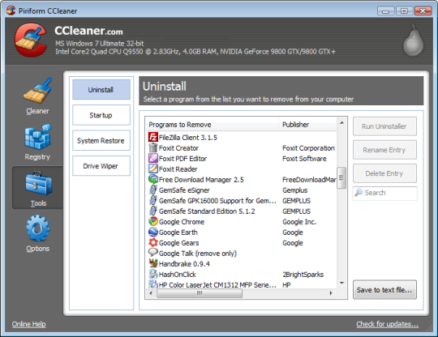
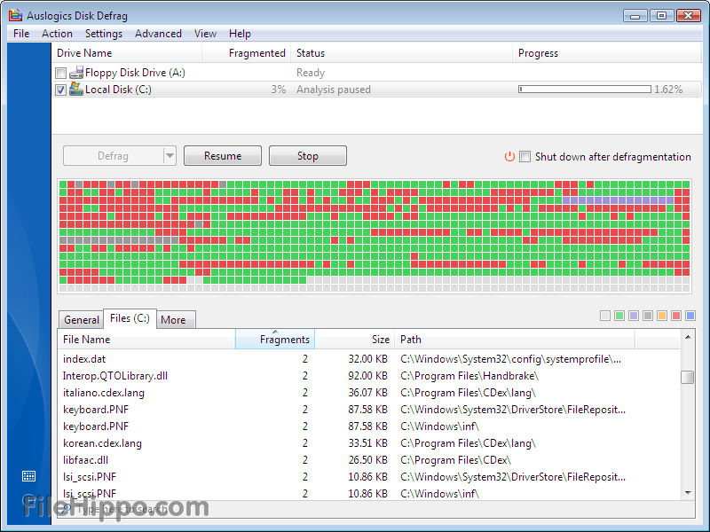
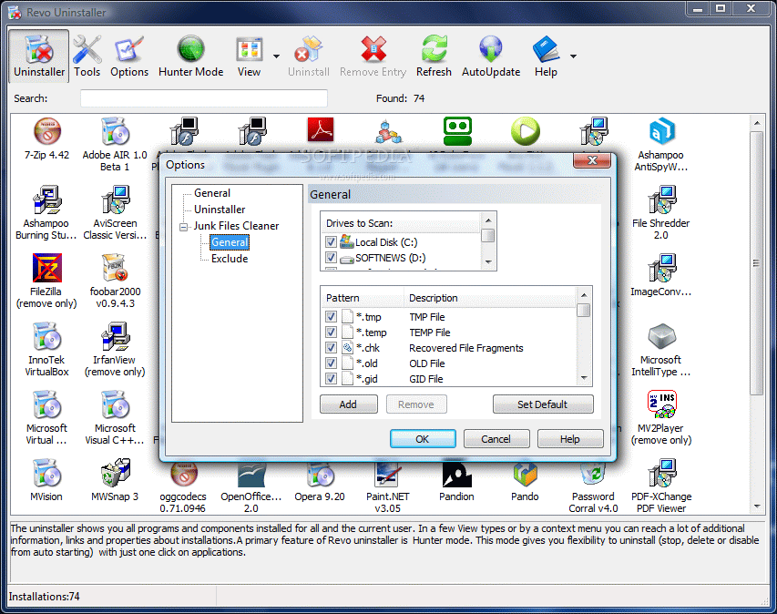

I will clean out your computer's cookies, cache, temporary system files, registry errors
and startup to get your computer running efficiently.
- Registry damage from botched uninstalls and past/current
virus infections can be slowing down your computer.
- A main source of performance degradation
is unwanted 3rd party programs running in the background. Cleaning out these programs can dramatically
improve startup times and overall system efficiency.
- Installation of additional RAM can greatly improve system speed. I will talk to you
about your usage habits to determine if installing new memory would be the best path forward.
- I will personally optimize your system's settings and clean up any wasted memory leaks with any job.
Industry leading optimization tools to get your computer running in factory-fresh condition.
CC Cleaner

Auslogics

Revo Uninstaller
